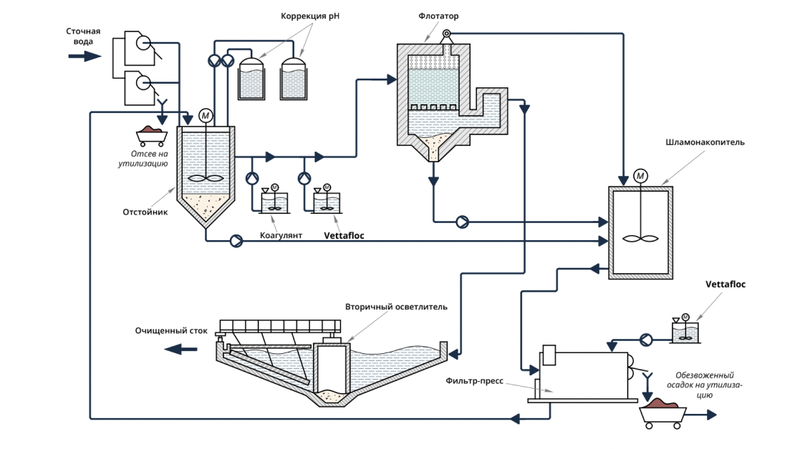
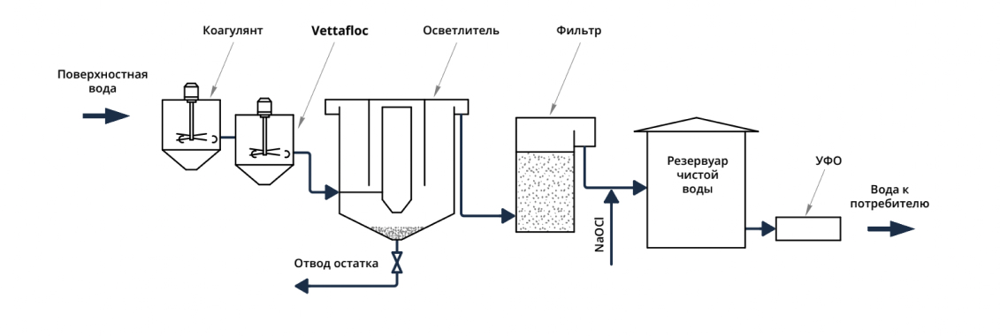
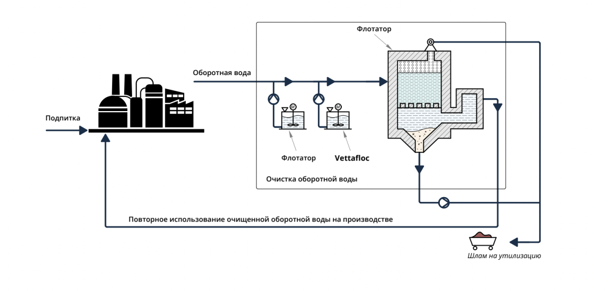
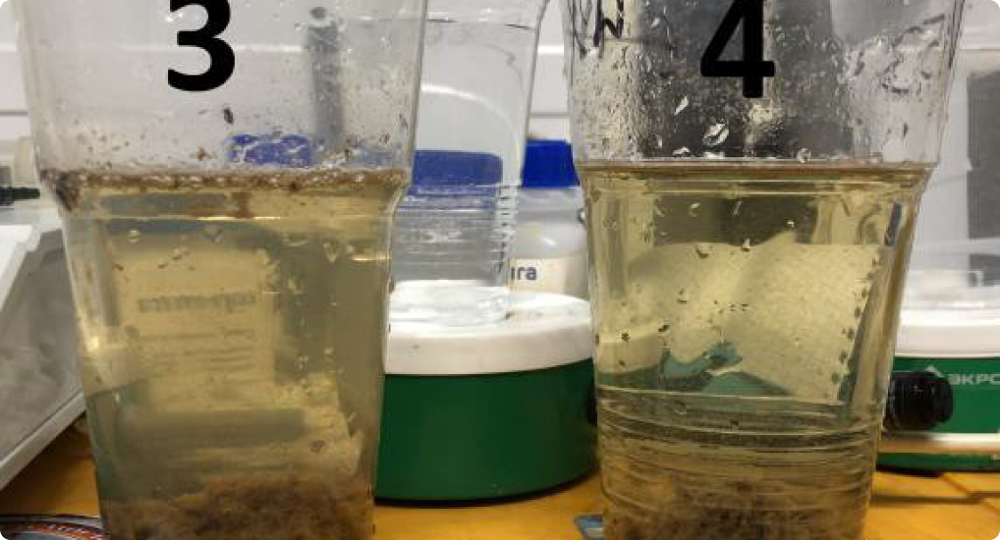
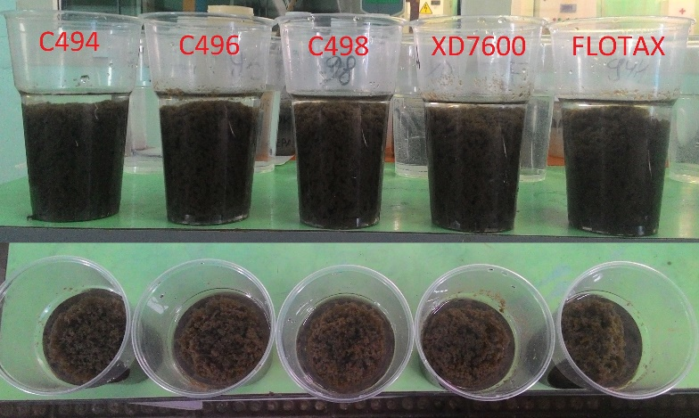
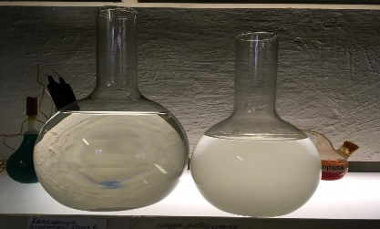
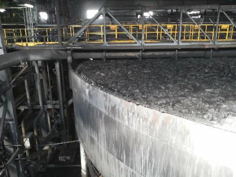

Правильно подобранный флокулянт (работающий в паре с коагулянтом) основа работы системы водоподготовки и предприятия. Оптимально подобранный флокулянт исключает выход из строя оборудования (систем фильтрации и обеззараживания). Качественная работа водоподготовки определяет бесперебойную эксплуатацию котельных установок, оборотных систем охлаждения, качество конечного продукта
Важно иметь максимально обезвоженный осадок (кек). Влажность утилизируемого осадка должна быть менее 80%. Оптимально подобранная связка флокулянта и коагулянта на начальной стадии очистки, например, на этапе флотации, принципиально влияет на последующие этапы очистки, а также на утилизацию флотошлама. Наши специалисты подберут решение, продемонстрируют как это работает в лабораторных масштабах, а также вместе с вами добьются промышленного результата.
Снижаем потребление воды, минимизируем сброс сточных вод, улучшаем качество оборотной воды – даем экономию бюджета в миллионы рублей. Качественное сгущение хвостов на обогатительных комбинатах снижает себестоимость продукта, повышает эффективность производства.
Очень часто, полимеры применяются непосредственно в технологическом процессе получения готового продукта, контактирует с продуктом, либо используются как основной материал при выполнении определенных услуг. Т.е. флокулянты являются если не основным, то вспомогательным сырьем в бизнесе того или иного предприятия. В этом случае заказчику принципиально важно, описав желаемый конечный результат или ту функцию, которую он возложил на флокулянт, получить экспертный совет и образцы достаточного спектра и количества для отработки технологии и промышленной реализации. Для этого мы всегда готовы предложить широкий спектр марок Vettafloc в наличии и, если необходимо принять участие, а также обеспечить выбранный полимер в кратчайшие сроки. И самое главное в этом случае, потребительская стабильность продукта или услуги заказчика обеспечивается стабильностью качественных параметров поставляемых флокулянтов Vettafloc.
Платежные условия обсуждаются индивидуально, мы всегда готовы пойти Вам навстречу.
Запуск очистных сооружений нового производства. Вариативность стока в периоды санобработки помещений.
Подбор связки реагентов для флотации: Коагулянт Ferix–3 + Superfloc C 494. Лабораторные и промышленные тесты в различные технологические периоды .
Мутность слива - 10,8 мг/л (стандартный режим работы, образец 4)
Мутность слива 13 мг/л (период санитарной обработки, образец 3).
1 200 000 руб/мес (штрафы за сброс).
Недостаточная водоотдача при обезвоживании.
Необходимость достижения влажности кека 80-82% .
Рекомендации по автоматизации процесса приготовления и дозирования раствора флокулянта. Лабораторный подбор и промышленные испытания Superfloc XD7600.
Рекомендации по автоматизации процесса приготовления и дозирования раствора флокулянта. Лабораторный подбор и промышленные испытания Superfloc XD7600.
| Марка флокулянта | Влажность кека,% (пром. испытания) | Мутность фильтрата, NTU (пром. испытания) |
|---|---|---|
| Praestol 853 BC (было) | 81,9 | 69,9 |
| 82 | 164 | |
| 82,3 | 233 | |
| Superfloc XD7600 | 79,8 | 32,1 |
| 80,0 | 64,8 | |
| 80,1 | 92,4 |
250 000 руб/мес (снижение удельного расхода флокулянта, утилизация).
Подбор универсального флокулянта для применения в процессе сгущения осадка и обезвоживания на фильтр-прессе.
Superfloc XD7600.
Мутность 6,1 мг/л Влажность кека на выходе с фильтр-пресса: 83,67%. (Влажность кека конкурирующих марок 86,5 – 87,2) Удельный расход: на 30% ниже конкурирующих марок.
364 000 руб/мес (снижение стоимости обезвоживания 1 т.с.в. за счет снижения удельного расхода флокулянта).
1. Флотация. Подготовка раствора флокулянта- барботаж воздухом
2. Обезвоживание активного ила и сырого осадка (удешевление стоимости обезвоживания).
1. Подбор стойкого к окислению флокулянта Superfloc C492HMW, оценка эффективности
применения в промышленных масштабах.
2. Подбор более экономичного продукта оценка эффективности – Superfloc 8294.
| № | Марка флокулянта | Нефтепродукты, мг/л |
|---|---|---|
| 1 | Superfloc С 492 HMW | 147 |
| 2 | Praestol 851 BC | 16,1 |
| 3 | Superfloc С 494 | 18,2 |
| 4 | Без обработки - исх. | 78 |
| Марка | Доза флок-та, мл | Объем ф-та, мл/10 сек | Кач-во отлипания, балл |
|---|---|---|---|
| Superfloc C 494 | 16 | 135 | 2 |
| 18 | 150 | 3 | |
| 20 | 160 | 3 | |
| Superfloc C 8294 | 16 | 140 | 2 |
| 18 | 145 | 3 | |
| 20 | 160 | 3 |
470 000 руб/мес (улучшение качества нефтепродуктов в сточной воде, экономия стоимости обезвоживания), 1 500 000 руб - стоимость станции приготовления флокулянта.
Очистка стока травильных цехов (разделение нейтрализованного стока) Недостаточное снижение железа и мутности (визуально) в сбрасываемом стоке.
Superfloc A110HMW.
Содержание железа общ, мг/л: до - 1,5 мг/л, после – 0,4 мг/л. Мутность: (слева – до, справа - после) Снижение удельного расхода флокулянта Superfloc A110HMW в сравнении с базовым применяемым - 20%
650 000 руб/мес (снижение объема очищенного сбрасываемого стока за счет возврата в процесс на технологические нужды, снижение удельного расхода флокулянта в процессе очистки стока) .
Подбор флокулянта для процессов сгущения и фильтрации.
Сгущение: Superfloc A110HMW (вместо Magnafloc 525) Фильтрация: Superfloc С496HMW (вместо Zetag 8180).
Увеличение скорости осаждения на 10-15%. Мутность слива: была 130 мг/л, стала 80 мг/л
650 000 руб/мес (снижение объема очищенного сбрасываемого стока за счет возврата в процесс на технологические нужды, снижение удельного расхода флокулянта в процессе очистки стока) .